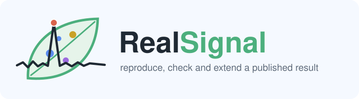
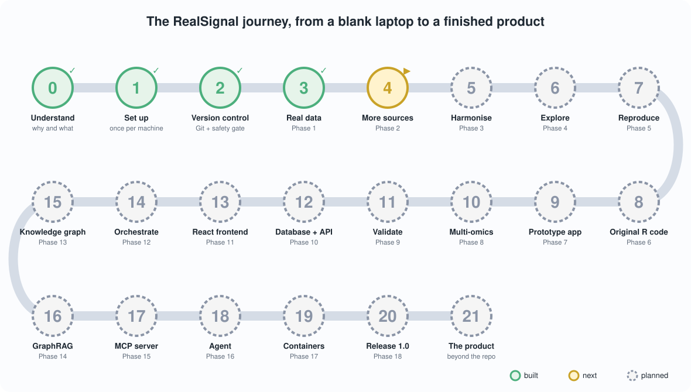

RealSignal rebuilds a published machine-learning study about bacteria that protect plants, checks it against evidence the model never saw, and documents every step from a blank laptop. These pages hold the project's interactive pictures. Everything else lives in the repository; start with the Handbook.
Interactive pages
The journey
Every stage from day 0 to the finished product: what you do, why, and how you know it worked.
How many communities?
Change the number of strains and the team size, and see why nobody tests them all.
Every community in the screen
Pick strains and see which training and test communities held them, and what happened to their plants.
The ideas in pictures



The data behind RealSignal belongs to its authors and is credited in the README. The pages here work offline too: download any of them and open it in a browser.